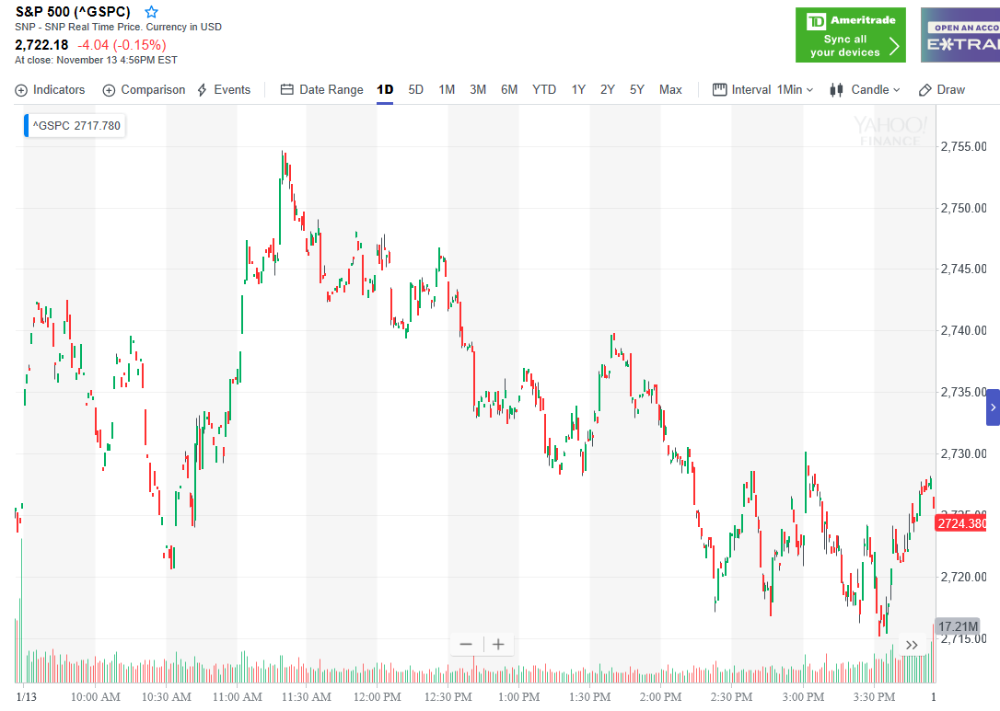

反向走势的速度差别
这个走势最重要的是，确定是真的反向走势，还是反弹后，继续运动。
这个做出了的决定完全相反。
大涨后，下跌的走势
大跌后，上涨的走势。
两个开盘大涨走势的对比
两个大幅低开后，走低反弹走势的对比
大涨后，下跌的走势
TOP

图示：开盘后，快速大涨，然后开始下跌。下跌速度远远低于上涨速度。
这时可以断定，它一定会大跌的。9：40冲高后，下跌，反弹，不到高点，再次下跌。再次反弹。
这个也是典型的大跌走势
大跌后，上涨的走势。
TOP
下跌速度很快，上升速度看起来很快。但是比起下跌来说，还是慢多了。

图示：9：10出现了底部加速，然后迅速反弹。
这时要首先确定它的底部加速走势。然后看它反弹的样子。虽然它第一浪反弹幅度很大，
但是比起前面的下跌来说，速度很慢。到了9：50，它才刚刚到了前面下跌的点。
这样可以认定。它一定会大涨。

图示:10：30出现了第二段下跌。另外这个也是一个
冲高后，快速下跌的例子。这样一定会反弹。它反弹的速度也是远远低于下跌速度。
这个说明它一定会超过下跌点2740.

图示：开盘后，下跌，走平后，再次下跌。虽然这个走平时间很短。
但是却很重要。这个走平就成了一个分界线。上面就是真空。
6:45下跌后，反弹。一直走平。但是一直没有超过前面的开盘下跌的走平点。然后大跌。
这个大跌，其实幅度不大，但是却分为两段。这样就形成了底部加速，而且也是一个两段走势。
表示跌势结束。
这时它反弹。反弹虽然看起来速度很快。但是它不到下跌开始点2828，就开始走平很久。这样
平均来看，仍然很慢。表示未来一定会超过2828这个点。
图示：9：15出现了底部加速，立刻反弹。速度也很快。但是比较它下跌的速度，
其实还是慢的。而且它不断的回调。说明未来一定会超过这个点。这时可以做多。
两个大幅低开后，走低反弹走势的对比:
TOP
1. 大幅低开，一般认为会反弹，结果它走出跌势走势后，大跌。

图示：大幅低开后，走出了横向5浪。大跌。
大跌时候出现了两段下跌走势。开始反弹。和它下跌的速度比较。反弹速度很慢。中间多次出现了大幅回调。
这个说明，它未来一定超过2720这个点。

图示：大幅低开后，冲高，大跌。开始反弹的时候，第一浪幅度很大。
虽然它是小幅连续上涨。冲高到2665后，它开始不断的回调，冲高。这样它未来一定超过2670这个点。
两个开盘大涨走势的对比
TOP

图示：大盘开盘大涨后，在高点没有停留一分钟，立刻回调。
回调的时候出现了两段走势，而且回调基本填补了真空。说明有了向上的动力。它后来有一次填补真空。
这次停留时间比较长。更加确认了填补真空。另外它的开盘是个走低后，双底的走势，这个双底走势，
在冲高的时候，也是冲了一下后，不到高点，回调。说明了它会超过高点大涨。

图示：大盘开盘后，走平几分钟，大涨。这个本身说明它没有根基。
它在高点一路缓慢下跌。表示一定会跌破开盘点。所以后面它似乎出现了两段走势。但是幅度不到也不能做多。
12：00反弹的速度很快，下跌的开始速度很慢。说明它一定会跌破2780这个点。
1：10再次快速反弹。这次到了2780这个关键点，1：30开始下跌后，又是比较缓慢的。也说明会跌破前面的低点。